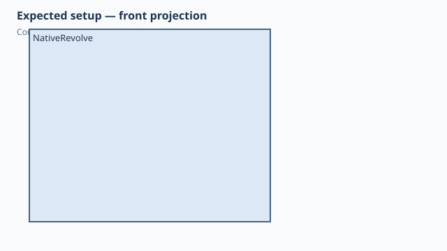

Forge model example · 1 · Basic geometry
Native sketch revolve
What this example makes
One closed native revolved solid with one solved source Sketch and one native Revolve history feature. SolidCraft stores angle-valued parameters internally in radians while Forge authors and exposes their unit as degrees.


Forge code
This is the complete Forge source used for this example.
"""Native profile-driven revolve qualification."""
class NativeRevolve:
length = 10.0
radius = 4.0
sweep = 360.0
def build(self):
with Sketch(name="RadialProfile", plane="XZ") as sketch:
Polygon2D(
[(0, 0), (0, self.radius),
(self.length, self.radius), (self.length, 0)],
plane="XZ",
)
return sketch.revolve(axis=Axis.X, angle=self.sweep)
NativeRevolve()
API used
`Sketch.revolve(axis=Axis.X, angle=..., sym=False)` on one completed standalone
closed profile whose world axis lies in the Sketch plane.
Reference code
The same model is written independently with the reference libraries below. This makes it easier to compare modelling style and the resulting shape.
How Forge builds it in SolidCraft
Forge emits the native Sketch and profile commands followed by `solid.revolve`. Root use creates a named body; Boolean use selects SolidCraft `join`, `cut` or `intersect` directly on the Revolve feature. No temporary body or primitive approximation is introduced.
SolidCraft result
Built and measured from the accepted durable SolidCraft evidence. Open the measurement details to inspect body sizes and editable parameters.
Original model · 1 bodies
Editable parameters
| Parameter | Value | Unit | Expression |
|---|---|---|---|
| radius | 4.0 | mm | 4 |
| length | 10.0 | mm | 10 |
| sweep | 6.283185307179586 | deg | 360 |
Body size
| Body | Minimum | Maximum | Volume mm³ | Faces | Edges | Closed |
|---|---|---|---|---|---|---|
| NativeRevolve | [0.0, -4.0, -4.0] | [10.000000000000002, 4.0, 4.0] | 502.654824574367 | 3 | 3 | True |
Saved-design results
resize_revolved_solid
{
"bodies": [
{
"area_mm2": 335.61944901923454,
"bbox": {
"max": [
10.0,
5.0,
5.0
],
"min": [
0.0,
0.0,
-5.0
]
},
"center_of_mass": [
5.0,
2.1220659078919377,
-9.188031368828145e-17
],
"closed": true,
"density_g_cm3": 1.29,
"edges": 6,
"face_types": {
"cylinder": 1,
"plane": 3
},
"faces": 4,
"kernel": {
"edges": 9,
"faces": 5,
"shells": 1,
"vertices": 6
},
"mass_g": 0.5065818153913542,
"material": "Default",
"measured_by": "smlib",
"name": "NativeRevolve",
"notes": [],
"vertices": 4,
"volume_mm3": 392.69908169872417
}
],
"body_count": 1,
"params": [
{
"comment": "",
"error": null,
"expression": "5 mm",
"model": false,
"name": "radius",
"unit": "mm",
"value": 5.0
},
{
"comment": "",
"error": null,
"expression": "10",
"model": false,
"name": "length",
"unit": "mm",
"value": 10.0
},
{
"comment": "",
"error": null,
"expression": "180 deg",
"model": false,
"name": "sweep",
"unit": "deg",
"value": 3.141592653589793
}
],
"sketches": [
{
"curves": 4,
"dof": 0,
"id": 1,
"name": "RadialProfile",
"profiles": 1,
"status": "solved",
"visible": false,
"wires_ok": true
}
],
"timeline": [
{
"error": null,
"id": 1,
"ms": 0.150723,
"name": "RadialProfile",
"rolled_back": false,
"suppressed": false,
"type": "Sketch",
"warning": null
},
{
"error": null,
"id": 2,
"ms": 4.376869,
"name": "Revolve1",
"rolled_back": false,
"suppressed": false,
"type": "RevolveFeature",
"warning": null
}
],
"total": {
"area_mm2": 335.61944901923454,
"edges": 6,
"faces": 4,
"mass_g": 0.5065818153913542,
"open_bodies_skipped": 0,
"vertices": 4,
"volume_mm3": 392.69908169872417
}
}verification/visual.json policy. The durable isometric image above is a current presentation preview, not a visual PASS claim.
Technical test details
Verification checks
baseline · PASS
{
"body_count": {
"actual": 1,
"expected": 1,
"label": "SolidCraft body count",
"pass": true
},
"body_envelopes": {
"actual_count": 1,
"expected_count": 1,
"kind": "body_envelopes",
"matched_pairs": [
{
"actual": {
"label": "NativeRevolve",
"max": [
10.000000000000002,
4.0,
4.0
],
"min": [
0.0,
-4.0,
-4.0
]
},
"expected": {
"label": null,
"max": [
10.0,
4.0,
4.0
],
"min": [
0.0,
-4.0,
-4.0
]
},
"max_delta": 1.7763568394002505e-15
}
],
"pass": true,
"tolerance": 0.01,
"unmatched_actual": [],
"unmatched_expected": []
},
"named_bodies": [
{
"closed": {
"actual": true,
"expected": true,
"label": "sole body closed",
"pass": true
},
"selector": "sole",
"volume": {
"actual": 502.654824574367,
"delta": 1.1368683772161603e-13,
"expected": 502.6548245743669,
"kind": "scalar",
"label": "sole body volume",
"pass": true,
"tolerance": 0.5
}
}
],
"parameters": {
"actual": {
"length": 10.0,
"radius": 4.0,
"sweep": 6.283185307179586
},
"expected": {
"length": 10.0,
"radius": 4.0,
"sweep": 6.283185307179586
},
"label": "SolidCraft parameters",
"pass": true
},
"sketch_count": {
"actual": 1,
"expected": 1,
"label": "SolidCraft sketch count",
"pass": true
},
"timeline": {
"actual": [
{
"name": "RadialProfile",
"type": "Sketch"
},
{
"type": "RevolveFeature"
}
],
"expected": [
{
"name": "RadialProfile",
"type": "Sketch"
},
{
"type": "RevolveFeature"
}
],
"label": "SolidCraft timeline",
"pass": true
}
}saved_design_resize_revolved_solid · PASS
{
"body_count": {
"actual": 1,
"expected": 1,
"label": "SolidCraft body count",
"pass": true
},
"named_bodies": [
{
"closed": {
"actual": true,
"expected": true,
"label": "sole body closed",
"pass": true
},
"selector": "sole",
"volume": {
"actual": 392.69908169872417,
"delta": 0.0,
"expected": 392.69908169872417,
"kind": "scalar",
"label": "sole body volume",
"pass": true,
"tolerance": 0.5
}
}
],
"parameters": {
"actual": {
"length": 10.0,
"radius": 5.0,
"sweep": 3.141592653589793
},
"expected": {
"length": 10.0,
"radius": 5.0,
"sweep": 3.141592653589793
},
"label": "SolidCraft parameters",
"pass": true
},
"sketch_count": {
"actual": 1,
"expected": 1,
"label": "SolidCraft sketch count",
"pass": true
}
}Geometry evidence
Are outer bounds sufficient? no
Bounds alone cannot distinguish a full revolved cylinder from another solid with the same envelope. Verification therefore requires body count, closed body state, analytic volume, parameter mutation and native timeline evidence.
Saved-design test
The saved design changes radius from 4 mm to 5 mm and sweep from 360 degrees to 180 degrees. Native recompute must produce a half-cylinder with the expected analytic volume while preserving the Sketch/Revolve history.
Raw test files
Accepted source files
- Forge model source
examples/native-revolve/scpf/model.py - Integration contract test
examples/native-revolve/tests/test_contract.py - Verification contract
examples/native-revolve/verification/verify.py
SolidCraft model and verification evidence
- Baseline measurements
model_verify/baseline/measurements.json - Native SolidCraft design
model_verify/native/model.sc - Native STEP export
model_verify/native/model.step - Native replay log
model_verify/native/replay-log.json - phase-1-results.json
model_verify/native/replay_work/phase-1-results.json - phase-1.json
model_verify/native/replay_work/phase-1.json - Native execution results
model_verify/native/results.json - Presentation preview image
model_verify/presentation/preview-iso.png - Presentation preview metadata
model_verify/presentation/preview.json - measurements.json
model_verify/saved_designs/resize_revolved_solid/measurements.json - model.sc
model_verify/saved_designs/resize_revolved_solid/model.sc - Verification result
model_verify/verification.json - Generated SolidCraft command JSON
solidcraft.json
Reference documentation
- SolidCraft — SolidCraft 0.48.1 supplies the native `solid.revolve` feature and saved-design recompute used by this qualification.
- Downstream latch — CAD issue #30 needs native turned rivets/pins; this fixture isolates only the reusable Revolve primitive required by that model.
Site source b3deec3eeb5c2284bde2dc41a61d67d52ee35554 · accepted model evidence source
b3deec3eeb5c2284bde2dc41a61d67d52ee35554 · durable build 59b271e4d5fa287ebabe169f875c71329d2151b1
Sources of truth
General model/page metadata is stored in model.yml.
Preserved engineering explanation is stored in README.md.
Exact expected values and tolerances are defined by
verification/verify.py.